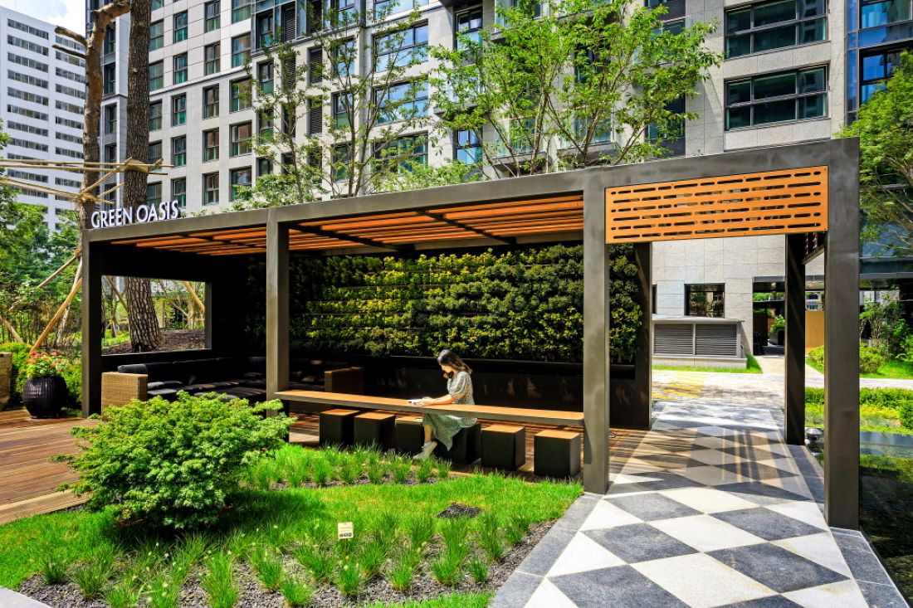
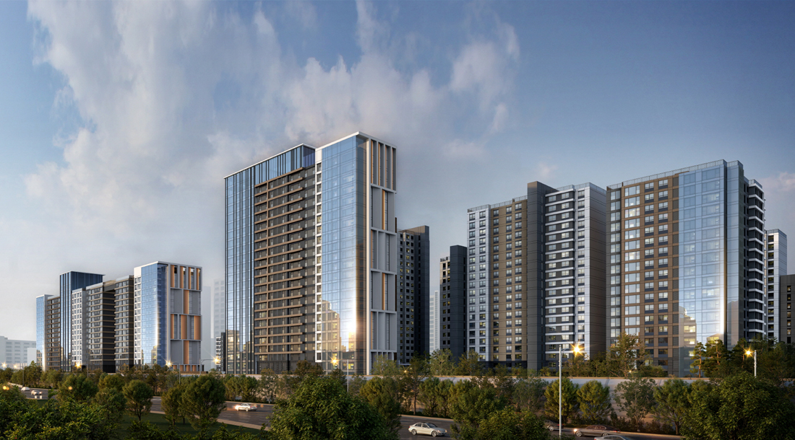
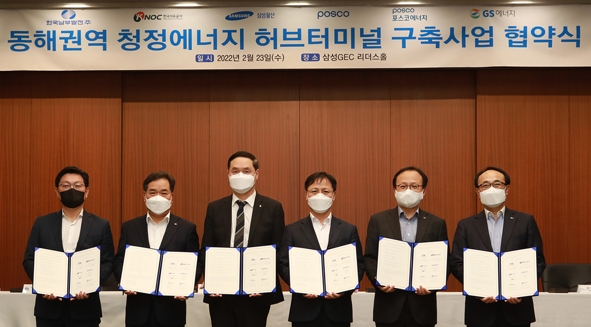
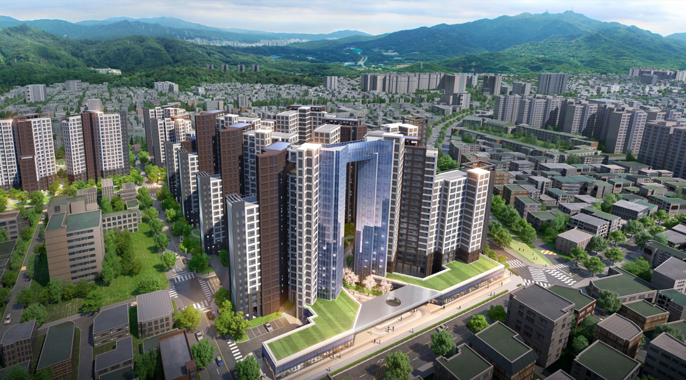

삼성물산 건설부문
News
현재의 위상을 넘어서, 지금에 만족하지 않고 인류의 삶을 더욱 행복하게 하는 미래를 향해 우리의 도전은 계속되고 있습니다.
뉴스
삼성물산 건설부문의 최신 소식을 전해드립니다.
총 1024개

삼성물산 건설부문(대표이사 오세철)은 세계 3대 디자인상 중 하나인 독일 iF 디자인 어워드에서 래미안 라클래시의 사계절 벽면녹화 파고라(Green Oasis Pergola)와 래미안 전기제품군 통합 디자인(Less Energy Switch System) 2개 작품이 본상(Winner)을 수상했다고 15일 밝혔다.
삼성물산, 2022 iF 디자인 어워드 수상작 배출
삼성물산 건설부문(대표이사 오세철)은 세계 3대 디자인상 중 하나인 독일 iF 디자인 어워드에서 래미안 라클래시의 사계절 벽면녹화 파고라(Green Oasis Pergola)와 래미안 전기제품군 통합 디자인(Less Energy Switch System) 2개 작품이 본상(Winner)을 수상했다고 15일 밝혔다.
가든분야 본상을 수상한 래미안 라클래시의 ‘사계절 벽면녹화 파고라’는 아파트 휴게시설인 파고라의 한쪽 벽면을 사계절 푸르게 유지되는 식물로 꾸민 차별화된 디자인으로 높은 평가를 받았다.

이촌코오롱리모델링조합은 16일 개최한 조합 총회에서 삼성물산을 시공사로 선정했다. 이촌코오롱 리모델링은 서울특별시 용산구 이촌동 412번지 일대에 지하6층~지상25층 규모 아파트 10개동 959세대와 부대복리시설 등을 조성하는 사업으로 공사비는 약 4,476억원이다.
삼성물산, 이촌코오롱 리모델링 시공사 선정
이촌코오롱리모델링조합은 16일 개최한 조합 총회에서 삼성물산을 시공사로 선정했다. 이촌코오롱 리모델링은 서울특별시 용산구 이촌동 412번지 일대에 지하6층~지상25층 규모 아파트 10개동 959세대와 부대복리시설 등을 조성하는 사업으로 공사비는 약 4,476억원이다.
이촌코오롱 리모델링 사업지는 국립중앙박물관, 용산가족공원, 이촌한강공원, 신용산초등학교, 용강중학교 등이 가깝고, 이촌역/서빙고역과 강변북로 접근이 편리한 지역에 위치해 있다.

삼성물산, 층간소음 차단성능 1등급 기술 인증 획득
층간소음 문제 해결을 앞당기기 위해 연구개발을 추진해 온 삼성물산 층간소음연구소가 층간소음 차단성능 1등급 기술을 선보였다.
삼성물산 건설부문(대표이사 오세철)은 중량충격음 차단성능 1등급 기술을 자체 개발하고 국가공인시험기관의 인증을 획득했다고 10일 밝혔다. 중량충격음 차단성능 1등급은 아래층에 전달되는 소음이 40데시벨(dB) 이하일 때 받을 수 있는 것으로, 이는 위층의 강한 충격음을 아래층에서 인지하기 어려울 정도의 성능을 의미한다. 특히 이번에 개발한 바닥충격음 차단 기술은 실험실의 측정값이 아닌 실제 공사가 진행중인 래미안 공사 현장...

삼성물산 건설부문과 포스코, 포스코에너지, GS에너지, 한국석유공사, 한국남부발전 등 국내 6개 기업이 차세대 에너지원으로 주목받고 있는 수소, 암모니아 등 청정에너지 사업을 공동으로 추진하기 위한 협약(MOU)을 체결했다고 24일 밝혔다. 특히 6개사는 공동사업의 일환으로 동해권역에 청정에너지 저장·공급 시설인 ‘허브터미널’구축사업을 우선 추진할 계획이다.
국내 6개사, 청정에너지 공동사업 협약 체결
삼성물산 건설부문과 포스코, 포스코에너지, GS에너지, 한국석유공사, 한국남부발전 등 국내 6개 기업이 차세대 에너지원으로 주목받고 있는 수소, 암모니아 등 청정에너지 사업을 공동으로 추진하기 위한 협약(MOU)을 체결했다고 24일 밝혔다. 특히 6개사는 공동사업의 일환으로 동해권역에 청정에너지 저장·공급 시설인 ‘허브터미널’구축사업을 우선 추진할 계획이다.
무탄소에너지원인 수소와 암모니아는 연소과정에서 이산화탄소를 발생시키지 않아 차세대 친환경 에너지원으로 부상하고 있으며, 특히 발전 연료로 사용하면 이산화탄소 발생량을 저감시킬 수 있다. 23일 서울 강동구 상일동....
